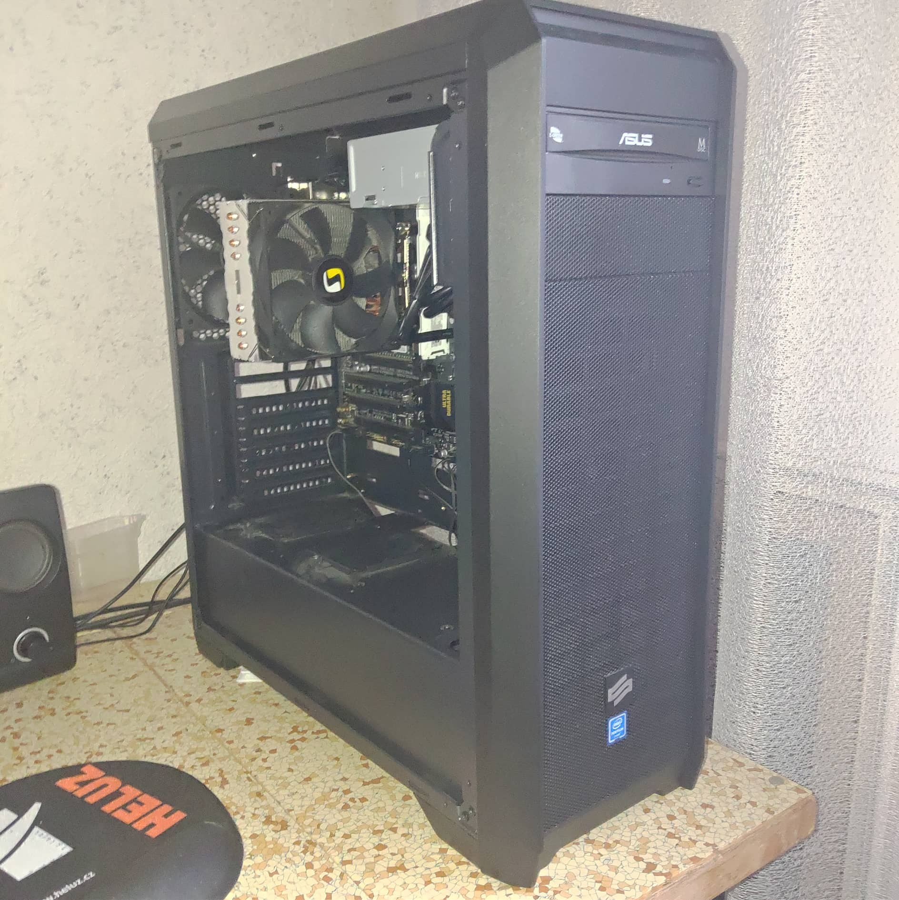
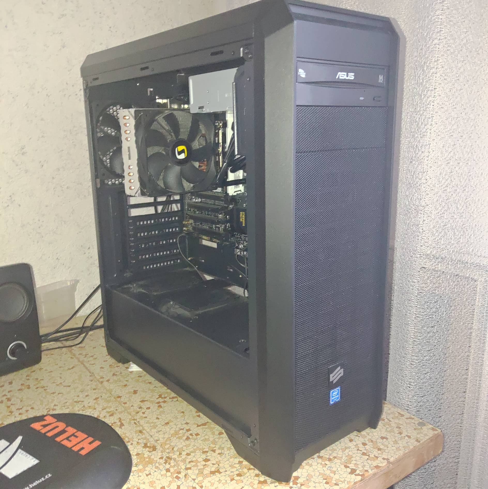

O mně
Vážení, moje jméno je David Kvašnovský a narodil jsem se 11.4.1999 v Českých Budějovicích. Chodil jsem do základní školy Matice školské od roku 2005 do roku 2014. Do 6. třídy jsem měl samé jedničky, pak už jsem měl i několik dvojek, ale horší známky ne.
 

V letech 2014 až 2018 jsem studoval na Střední průmyslové škole v Písku obor IT, specializace programovaní a počítačové sítě a studim jsem zakončil maturitou.
V letech 2018 až 2019 jsem studoval Fakultu informačních technologií na Českém Vysokém Učením Technickém v Praze, studium jsem nedokončil, ale naučil jsem se tam programovat v jazyce C.
Ve stejných letech jsem pro firmu Wikasoft s.r.o vyvíjel webovou aplikaci s názvem Accommodation ve frameworku Spring Boot. Používal jsem následující technologie: Java 8 , PostgreSQL, HTML 5 , Javascript , Bootstrap 4, Less, IntelliJ IDEA, Git, Kubuntu 18.04. Pro tuto práci jsem upgradoval místní PC z mnou vybraných komponentů, jednalo se o základní desku, CPU a operační paměti RAM. Mimo to jsem pro babičku Boženu a strýce Tomáše sestavil a zprovoznil dva nové počítače.
V roce 2020 byla moje práce pomáhat mé babičce s nemocným dědou, který trpěl na Alzheimerovu chorobu. Na ÚP jsem byl evidován jako poskytovatel péče osobě blízké.
V roce 2021 a 2022 jsem opět pracoval pro Wikasoft s.r.o. Vyvíjel jsem e-shop pro Německého klienta.
Moje dovednosti
Anglický jazyk (B2)
V létě roku 2016 jsem absolvoval čtrnáctidenní EF Education First ku rz anglického jazyka v Oxfordu, kde jsem obdržel dva certifikáty: Course Certificate a EF Standart English Test Certificate prohlašující dosažení jazykové úrovně B2. V školních letech 2015/2016 a 2016/2017 jsem jednou týdně navštěvoval kurz anglického jazyka úrovně B2. Lektorem byl pan Mgr. Ivo Klement. Na ZŠ jsem patřil do jazykové skupiny, díky čemuž jsem měl angličtinu náročnější. 2 roky při ZŠ jsem jednou týdně chodil na kurz.
Programování v jazyce C
Umím používat cykly, podmínky, statickou a dynamickou alokaci paměti, rekurzi, spojový seznam, binární strom, pole, struktury. Uměl jsem kompilovat v UNIXovém Shellu a program ladit v aplikaci Valgrind. Céčko jsem se učil půl roku na SŠ a dva semestry na FIT ČVUT v předmětu Programovaní a Algoritmizace 1 (PA1). Mnou vypracované zdrojové kódy z těchto úloh ze školního roku 2019/2020 jsou k dispozici na https://github.com/kvasndav/PA1
Java
Backend webové aplikace jsem dělal v Javě 8 s frameworkem Spring Boot a s v templatovacím enginem Thymeleaf. Dokážu tvořit kontroléry, entity, formuláře, servisy a dosazovat objekty do HTML templateu. Dále jsem si přečetl knihu „Java bez předchozích znalostí“ (obsah knihy je v ukázce na https://www.alza.cz/media/java-d2905600.htm )
PHP, JavaScript, SQL, C, C++
Každý z jazyků jsme se půl roku učili na střední škole. K praktické maturitní zkoušce jsem měl za úkol vytvořit konzolovou aplikaci v C++ pro manipulaci s CSV souborem.
Microsoft Windows 7 a novější
Zvládnu nainstalovat samotný OS, nainstalovat a odinstalovat ovladače a potřebné aplikace, přidávat uživatele a udělovat jim práva, aktualizovat systém, vytvořit a použít bod obnovení, spravovat diskové oddíly ad.
GNU/Linux
Umím naintalovat většinu distribucí i s vlastním diskovým rozvržením a to sice: Debian, Ubuntu, OpenSUSE,Manjaro, Nobara, Fedora, Deepin. V terminálu zvládnu používat příkazy jako např. man, cd, mv, cp, mkdir, rm, cat, less, apt, sudo, zypper, dpkg, su ad. Umím přidávat uživatele, udělovat jim práva, zjistit práva jednotlivých souboru pomocí příkazu "ls -la", instalovat aplikace přes terminál. Dokonce i vím, jak opustit VIM :D
Počítačový hardware
Umím vytvořit nabídku PC sestavy a následně jí složit, přetaktovat CPU, GPU a RAM. V případě nefunkčního PC umím zjistit, které komponenty za to můžou a následně je vyměnit za funkční. Umím otestovat počítač na stabilitu pomocí programů jako je Prime95, MSI Kombustor, Aida64, OCCT ad.
Služby, které nabízím
Poradenství s výběrem hardware komponentů, PC, laptopů a PC příslušenství.
Návrh, sestavení, odlazení PC sestavy pro práci, multimédia, hraní a další.
Výměnu jednotlivých komponentů v rámci upgradu či nefunčnosti komponentů.
Přetaktování procesorů, operačních pamětí a grafických karet.
Test stability sytému, pomocí programů OCCT, Prime95, MSI Kombustor a AIDA64.
Vytvoření diskového pole RAID za účelem redundance či zálohování dat.
Instalace OS Windows 10/11, GNU/Linux, instalace ovladačů a software.
Migrace OS či dat na jiný disk.
Delid Intel procesorů 3., 4., 5., 6., 7., 8. generace, aplikace tekutého kovu a přilepení IHS silikonem.
Přepastování procesorů a grafických karet.
Vodní chlazení na míru (otevřený vodní okruh).
Cenu za mé služby vám v případě vašeho zájmu o mé služby napíšu do emailu či SMS.
Kontakt na mě
Adresa servisního střediska:
Čechova 566/21, České Budějovice, 37001
Telefonní číslo:
+420 722 742 577
E-mail:
david.kvasnovsky.1999@gmail.com